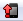
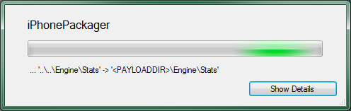
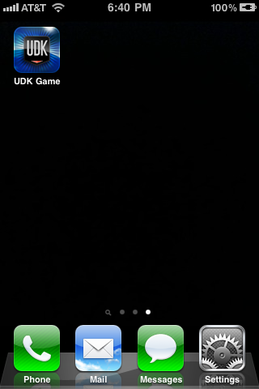
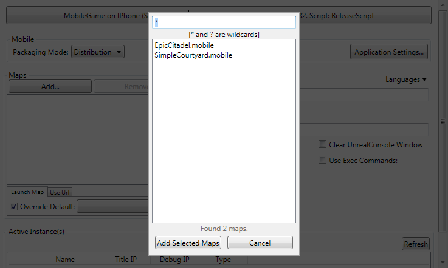

UDN
Search public documentation:
GettingStartediOSDevelopmentCH
English Translation
日本語訳
한국어
Interested in the Unreal Engine?
Visit the Unreal Technology site.
Looking for jobs and company info?
Check out the Epic games site.
Questions about support via UDN?
Contact the UDN Staff
日本語訳
한국어
Interested in the Unreal Engine?
Visit the Unreal Technology site.
Looking for jobs and company info?
Check out the Epic games site.
Questions about support via UDN?
Contact the UDN Staff
入门指南: iOS开发
概述
需求
系统需求
除了注册为Apple的开发者外，还有一些和开发及提交iOS游戏相关的硬件和软件需求。开发iOS游戏
开发针对iOS设备的硬件需求和使用虚幻引擎3构建游戏的正常的系统需求一样。您需要一个能够运行虚幻编辑器的PC。 虚幻引擎3目前支持以下iOS设备:- iPhone 4
- iPhone 4s
- iPhone 3GS
- iPad
- iPad2
- 第四代iPod touch
- 第三代iPod touch (除了8G的第三代设备)。
- 安装了DirectX 9.0c的Windows XP SP2。
- 2.0+ GHz CPU
- 2+ GB 内存
- 支持Shader Model 3.0的显卡，例如 nVidia GeForce 7800
- iTunes
提交iOS游戏
为了提交一个iOS游戏到App Store，您需要访问安装Mac系统的电脑。Apple要求使用MacOS X上的Application Loader(应用程序加载器)工具来上传应用程序。 您需要在Mac机器上安装以下应用程序:- Application Loader(应用程序加载器)
Provisioning(服务提供)
新用户
对于新的iOS开发者，设置provisioning(信息提供)和创建证书以便可以使其和UDK协同使用的过程由多个部分组成：- 生成密钥对和证书请求。
- 创建证书和mobile provision(移动设备信息提供)。
- 导入provision(信息提供)和证书到UDK中。
现有开发者
如果您已经是iOS开发者并且您以前已经从Mac或PC上向iOS设备部署过应用程序，那么您需要通过使用配置向导中的”Already a registered iOS developer(已经是iOS注册开发人员)“标签来把您的签署标识转移到UDK中。这也会涉及到从您的Mac的Keychain应用程序中搜索您的的现有开发者证书的过程。 关于已经是iOS开发者的人设置服务器提供过程的完整步骤，请参照转移现有的服务提供 指南页面。测试
移动设备预览器
移动设备预览器通过使用OpenGL ES2渲染器允许您可视化地在PC上查看您的游戏，这种渲染效果和移动设备上的渲染几乎一样。这使您可以获得游戏的接近1：1的预览，不必把游戏部署到设备上进行测试。和图形效果一样，一些其他的功能也可以进行仿真，比如模拟触摸控制。 关于在PC上模拟移动设备的更多信息，请参照移动设备预览器页面。
关于在PC上模拟移动设备的更多信息，请参照移动设备预览器页面。
在iOS设备上运行游戏
可以从UnrealEd中直接在连接的iOS设备上进行测试。点击UnrealEd工具条上的
按钮将会在移动设备上把UnrealEd中的当前地图作为应用程序进行打包和安装。 这个过程显示了打包和转移地图的过程：
点击按钮将会显示这个过程的细节信息： 一旦打包和转移过程完成，游戏就可以向其他应用程序那样在设备上运行了：
一旦打包和转移过程完成，游戏就可以向其他应用程序那样在设备上运行了：

打包并部署到iOS设备
-
点击
 按钮来打开配置设置：
按钮来打开配置设置：

-
请确保按照以下方式进行设置:

点击Game(游戏) Platform(平台) Game Config(游戏配置) Script Config（脚本配置） Cook/Make Config(烘焙/制作 配置) MobileGameIPhoneShipping_32ReleaseScriptShipping_32按钮来保存设置。
-
如果以前 Mobile(移动设备) 部分不可见，那么现在它应该是可见的。请确保 Packaging Mode(打包模式) 设置为 Default(默认) 。否则，将不能通过Unreal Frontend把打包的游戏部署到连接的设备上。

-
接下来，您需要添加需要打包到应用程序中的所有地图。这可以在 maps(地图) 部分完成：
 点击
点击  按钮。将会打开一个窗口，列出当前游戏项目的所有现有地图。
按钮。将会打开一个窗口，列出当前游戏项目的所有现有地图。

在列表中选择您想添加的地图： 点击
点击  按钮来添加地图并关闭窗口。现在地图应该列在地图列表中了:
按钮来添加地图并关闭窗口。现在地图应该列在地图列表中了:

-
请确保设置默认加载地图：

-
请通过点击以下显示的每个按钮并启用每步菜单中 Step Enabled(启用的步骤) 选项来启用 pipeline job(串行任务)的所有步骤。

-
点击 Start(开始) 按钮来启动串行任务。在串行任务处理过程中将会显示图形。一旦完成，输出窗口将会显示结果。

- 现在，可以在设备上像运行其他应用程序那样来玩游戏了。